import numpy as np
import pandas as pd
import matplotlib.pyplot as plt
import seaborn as sns
from sklearn.preprocessing import StandardScaler
from sklearn.cluster import KMeans, AgglomerativeClustering
from scipy.cluster.hierarchy import dendrogram, linkageClustering Methods
IN5148: Statistics and Data Science with Applications in Engineering
Agenda
Unsupervised Learning
Clustering Methods
K-Means Method
Hierarchical Clustering
Unsupervised Learning
Types of learning
In data science, there are two main types of learning:
Supervised learning. In which we have multiple predictors and one response. The goal is to predict the response using the predictor values.
Unsupervised learning. In which we have only multiple predictors. The goal is to discover patterns in your data.
Types of learning
In data science, there are two main types of learning:
Supervised learning. In which we have multiple predictors and one response. The goal is to predict the response using the predictor values.
Unsupervised learning. In which we have only multiple predictors. The goal is to discover patterns in your data.
Unsupervised learning
Goal: organize or group data to gain insights. It answers questions like these
- Is there an informative way to visualize the data?
- Can we discover subgroups among variables or observations?
. . .
Unsupervised learning is more challenging than supervised learning because it is subjective and there is no simple objective for the analysis, such as predicting a response.
. . .
It is also known as exploratory data analysis.
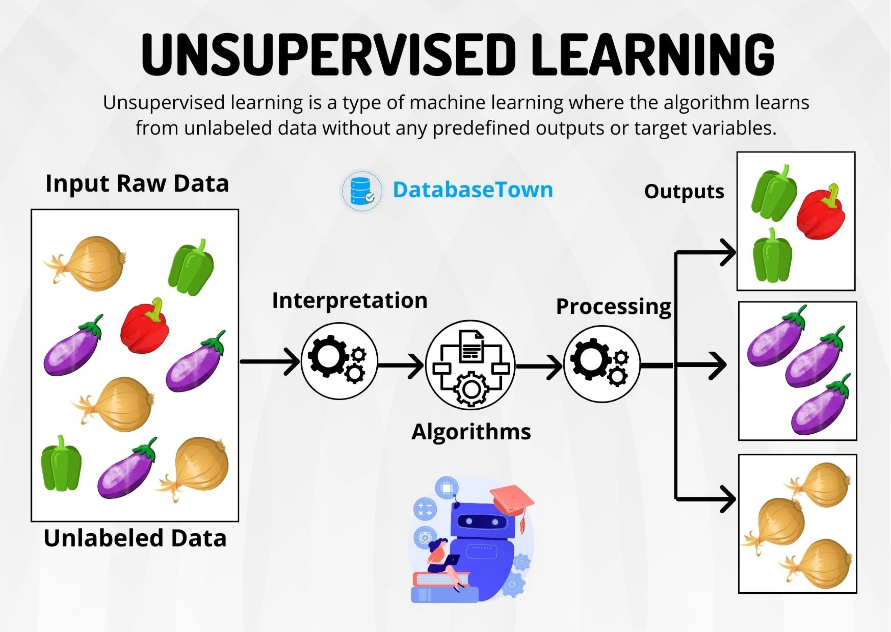
Examples of Unsupervised Learning
Marketing. Identify a segment of customers with a high tendency to purchase a specific product.
Retail. Group customers based on their preferences, style, clothing choices, and store preferences.
Medical Science. Facilitate the efficient diagnosis and treatment of patients, as well as the discovery of new drugs.
Sociology. Classify people based on their demographics, lifestyle, socioeconomic status, etc.
Unsupervised learning methods
Clustering Methods aim to find subgroups with similar data in the database.
Principal Component Analysis seeks an alternative representation of the data to make it easier to understand when there are many predictors in the database.
Here we will use these methods on predictors \(X_1, X_2, \ldots, X_p,\) which are numerical.
Unsupervised learning methods
Clustering Methods aim to find subgroups with similar data in the database.
Principal Component Analysis seeks an alternative representation of the data to make it easier to understand when there are many predictors in the database.
Here we will use these methods on predictors \(X_1, X_2, \ldots, X_p,\) which are numerical.
Clustering Methods
Clustering methods
They group data in different ways to discover groups with common traits.
. . .
Two classic clustering methods are:
K-Means Method. We seek to divide the observations into K groups.
Hierarchical Clustering. We divide the n observations into 1 group, 2 groups, 3 groups, …, up to n groups. We visualize the divisions using a graph called a dendrogram.
Before we move on…
let’s import the data science libraries into Python.
Here, we use specific functions from the pandas, matplotlib, seaborn, sklearn, and scipy libraries in Python.
Example 1
The “penguins.xlsx” database contains data on 342 penguins in Antarctica. The data includes:
- Bill length in millimeters.
- Bill depth in millimeters.
- Flipper length in millimeters.
- Body mass in grams.
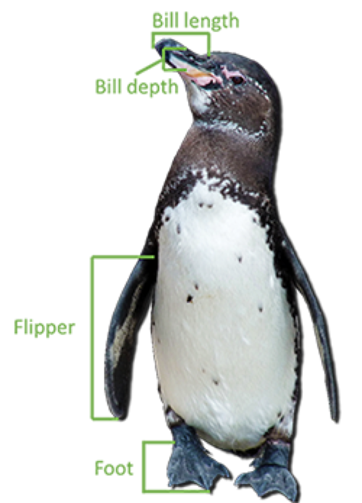
Data
penguins_data = pd.read_excel("penguins.xlsx")
penguins_data.head()| species | island | bill_length_mm | bill_depth_mm | flipper_length_mm | body_mass_g | sex | year | |
|---|---|---|---|---|---|---|---|---|
| 0 | Adelie | Torgersen | 39.1 | 18.7 | 181 | 3750 | male | 2007 |
| 1 | Adelie | Torgersen | 39.5 | 17.4 | 186 | 3800 | female | 2007 |
| 2 | Adelie | Torgersen | 40.3 | 18.0 | 195 | 3250 | female | 2007 |
| 3 | Adelie | Torgersen | 36.7 | 19.3 | 193 | 3450 | female | 2007 |
| 4 | Adelie | Torgersen | 39.3 | 20.6 | 190 | 3650 | male | 2007 |
Data visualization
Can we group penguins based on their characteristics?
Code
plt.figure(figsize=(8, 5)) # Set figure size.
sns.scatterplot(data=penguins_data, x="bill_depth_mm", y="bill_length_mm") # Define type of plot.
plt.show() # Display the plot.
K-Means Method
The K-Means method
Goal: Find K groups of observations such that each observation is in a different group.
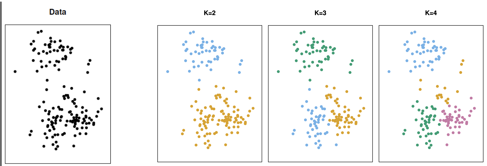
For this, the method requires two elements:
A measure of “closeness” between observations.
An algorithm that groups observations that are close to each other.
. . .
Good clustering is one in which observations within a group are close together and observations in different groups are far apart.
How do we measure the distance between observations?
For quantitative predictors, we use the Euclidean distance.
For example, if we have two predictors \(X_1\) and \(X_2\) with observations given in the table:
| Observation | \(X_1\) | \(X_2\) |
|---|---|---|
| 1 | \(X_{1,1}\) | \(X_{1,2}\) |
| 2 | \(X_{2,1}\) | \(X_{2,2}\) |
Euclidean distance
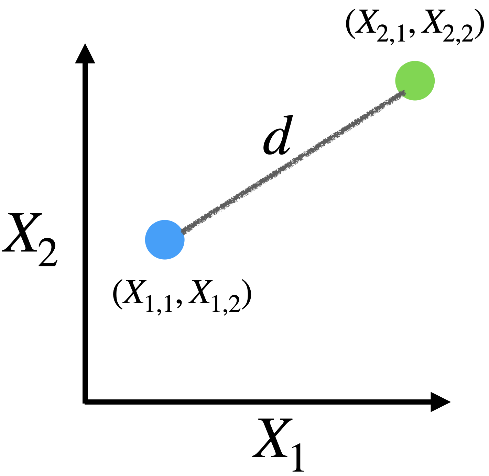
\[d = \sqrt{(X_{1,1} - X_{2,1})^2 + (X_{1,2} - X_{2,2})^2 }\]
We can extend the Euclidean distance to measure the distance between observations when we have more predictors. For example, with 3 predictors we have
| Observation | \(X_1\) | \(X_2\) | \(X_3\) |
|---|---|---|---|
| 1 | \(X_{1,1}\) | \(X_{1,2}\) | \(X_{1,3}\) |
| 2 | \(X_{2,1}\) | \(X_{2,2}\) | \(X_{2,3}\) |
Where the Euclidean distance is
\[d = \sqrt{(X_{1,1} - X_{2,1})^2 + (X_{1,2} - X_{2,2})^2 + (X_{1,3} - X_{2,3})^2 }\]
Problem with Euclidean distance
The Euclidean distance depends on the units of measurement of the predictors!
Predictors with certain units have greater importance in calculating the distance.
This is not good since we want all predictors to have equal importance when calculating the Euclidean distance between two observations.
The solution is to standardize the units of the predictors.
K-Means Algorithm
Choose a value for K, the number of groups.
- Randomly assign observations to one of the K groups.
- Find the centroids (average points) of each group.
- Reassign observations to the group with the closest centroid.
- Repeat steps 3 and 4 until there are no more changes.

Example 1 (cont.)
Let’s apply the algorithm to the predictors bill_depth_mm and bill_length_mm of the penguins dataset.
| bill_depth_mm | bill_length_mm | |
|---|---|---|
| 0 | 18.7 | 39.1 |
| 1 | 17.4 | 39.5 |
| 2 | 18.0 | 40.3 |
| 3 | 19.3 | 36.7 |
| 4 | 20.6 | 39.3 |
Standarization
Since the K-means algorithm works with Euclidean distance, we must standardize the predictors before we start.
In this way, all of them will be equally informative in the process.
## Standardize
scaler = StandardScaler()
Xs_penguins = scaler.fit_transform(X_penguins)In Python, we use the KMeans() function of sklearn to apply K-means clustering.
KMeans()tells Python we want to train a K-means clustering algorithm and.fit_predict()actually trains it using the data.
# Fit KMeans with 3 clusters
kmeans = KMeans(n_clusters = 3, random_state = 301655)
clusters = kmeans.fit_predict(Xs_penguins)The argument n_clusters sets the desired number of clusters and random_state allows us to reproduce the analysis.
The clusters created are contained in the clusters object.
Code
clustersarray([1, 1, 1, 1, 1, 1, 1, 1, 1, 1, 1, 1, 1, 1, 1, 1, 1, 1, 2, 1, 1, 1,
1, 1, 1, 1, 1, 1, 1, 1, 1, 1, 1, 1, 1, 1, 1, 1, 1, 1, 1, 1, 2, 1,
1, 1, 1, 1, 1, 1, 1, 1, 1, 1, 1, 1, 1, 1, 1, 1, 1, 1, 1, 1, 1, 1,
1, 1, 1, 1, 1, 1, 2, 1, 1, 1, 1, 1, 1, 1, 1, 1, 1, 1, 1, 1, 1, 1,
1, 1, 1, 1, 1, 1, 1, 1, 1, 1, 1, 1, 1, 1, 1, 1, 1, 1, 1, 1, 1, 1,
2, 1, 1, 1, 1, 1, 1, 1, 1, 1, 1, 1, 1, 1, 1, 1, 1, 1, 1, 1, 1, 1,
1, 1, 1, 1, 1, 1, 1, 1, 1, 1, 1, 1, 1, 1, 1, 1, 1, 1, 1, 0, 0, 0,
0, 0, 0, 0, 0, 0, 0, 0, 0, 0, 0, 0, 0, 0, 0, 0, 0, 0, 0, 0, 0, 0,
0, 0, 0, 0, 0, 0, 0, 0, 2, 0, 0, 0, 1, 0, 0, 0, 0, 0, 0, 0, 0, 0,
0, 0, 0, 0, 0, 0, 0, 0, 0, 0, 0, 0, 0, 0, 0, 0, 0, 0, 2, 0, 0, 0,
0, 0, 0, 0, 0, 0, 0, 0, 0, 0, 0, 0, 0, 0, 0, 0, 2, 0, 0, 0, 2, 0,
2, 0, 0, 0, 0, 0, 0, 0, 0, 0, 2, 0, 0, 0, 0, 0, 0, 0, 0, 0, 0, 0,
0, 0, 0, 0, 0, 0, 0, 0, 0, 0, 2, 2, 2, 2, 2, 2, 2, 2, 2, 2, 2, 2,
2, 2, 2, 2, 2, 2, 2, 2, 1, 2, 0, 2, 2, 2, 2, 2, 2, 2, 1, 2, 1, 2,
2, 0, 2, 2, 0, 2, 2, 2, 2, 0, 2, 2, 2, 2, 2, 2, 0, 2, 2, 2, 1, 2,
0, 2, 2, 2, 2, 0, 0, 2, 1, 2, 2, 2], dtype=int32)To visualize the clusters, we augment the original dataset X_penguins (without standarization) with the clusters object. usign the code below.
clustered_penguins = (X_penguins
.assign(Cluster = clusters)
)
clustered_penguins.head()| bill_depth_mm | bill_length_mm | Cluster | |
|---|---|---|---|
| 0 | 18.7 | 39.1 | 1 |
| 1 | 17.4 | 39.5 | 1 |
| 2 | 18.0 | 40.3 | 1 |
| 3 | 19.3 | 36.7 | 1 |
| 4 | 20.6 | 39.3 | 1 |
Code
plt.figure(figsize=(9, 6))
sns.scatterplot(data = clustered_penguins, x = 'bill_length_mm', y = 'bill_depth_mm',
hue = 'Cluster', palette = 'Set1')
plt.title('K-means Clustering of Penguins')
plt.xlabel('Bill Length (mm)')
plt.ylabel('Bill Depth (mm)')
plt.grid(True)
plt.tight_layout()
plt.show()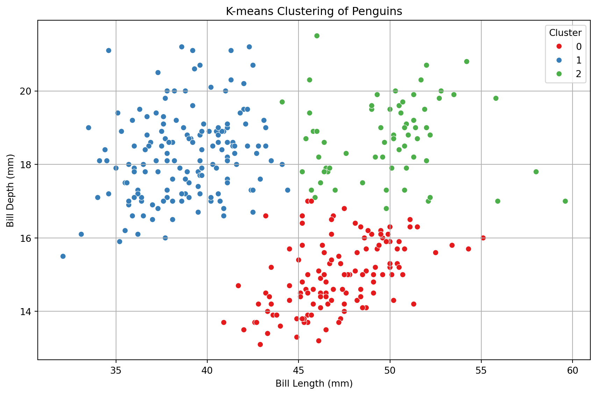
The truth: 3 groups of penguins
Code
plt.figure(figsize=(8.5, 5.5))
sns.scatterplot(data=penguins_data, x="bill_length_mm", y="bill_depth_mm",
hue="species", palette = 'Set1') # Define type of plot.
plt.xlabel('Bill Length (mm)')
plt.ylabel('Bill Depth (mm)')
plt.tight_layout()
plt.grid(True)
plt.show() # Display the plot.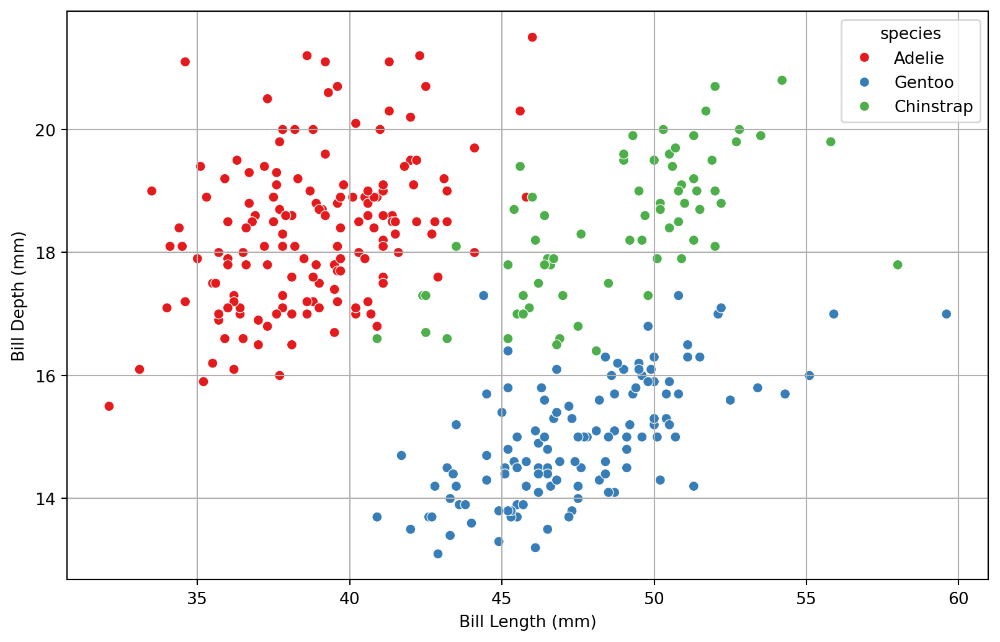
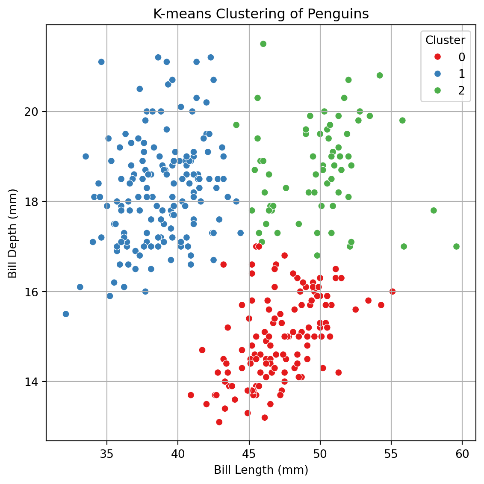
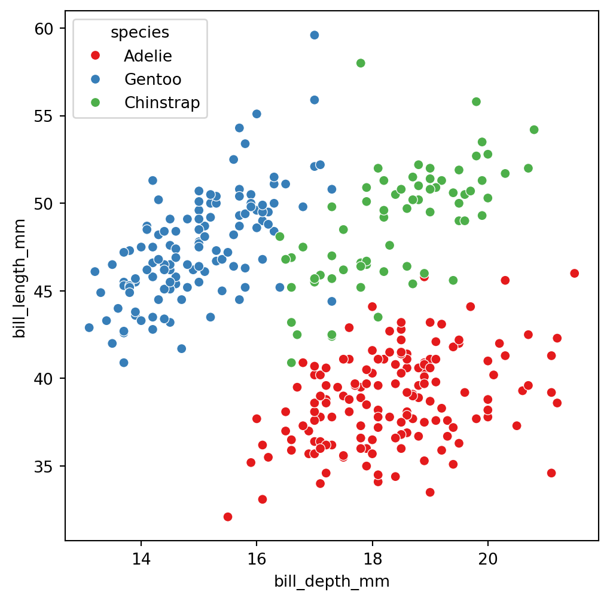
Let’s try using more predictors
X_penguins = penguins_data.filter(['bill_depth_mm', 'bill_length_mm',
'flipper_length_mm', 'body_mass_g'])
## Standardize
scaler = StandardScaler()
Xs_penguins = scaler.fit_transform(X_penguins)
# Fit KMeans with 3 clusters
kmeans = KMeans(n_clusters = 3, random_state = 301655)
clusters = kmeans.fit_predict(Xs_penguins)
# Save new clusters into the original data
clustered_X = (X_penguins
.assign(Cluster = clusters)
)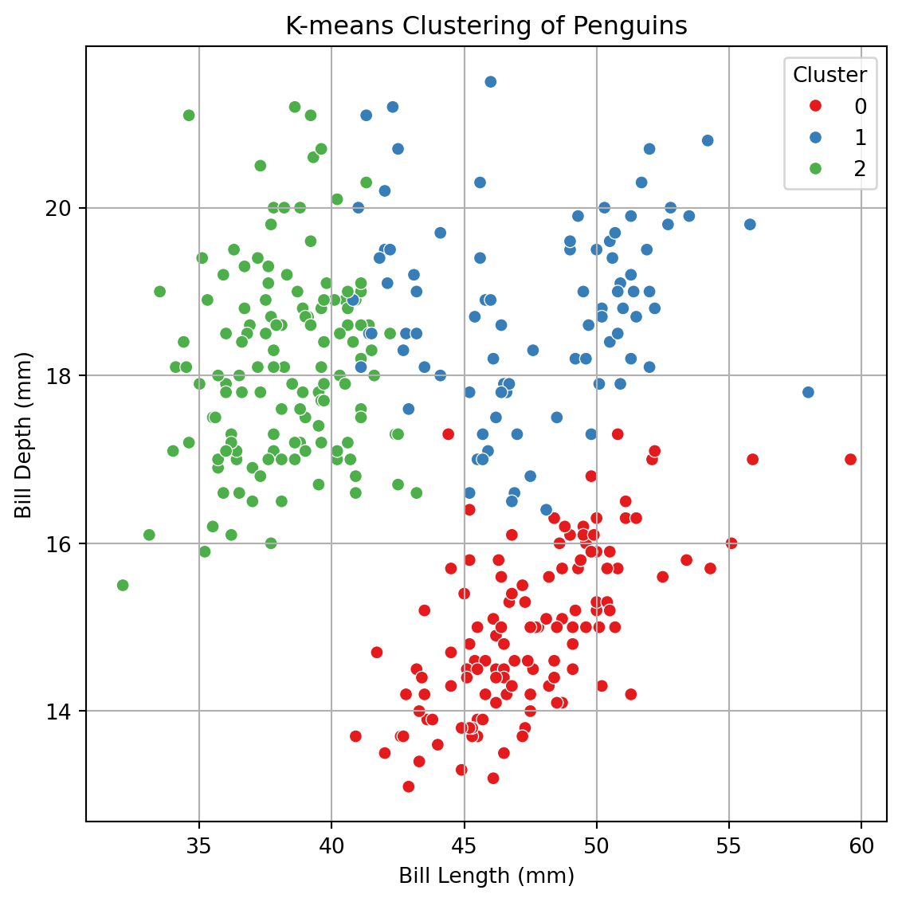
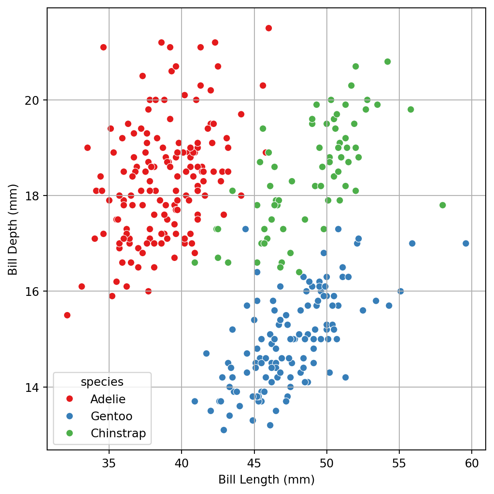
These are the three species
Adelie

Gentoo
Chinstrap
Determining the number of clusters
A simple way to determine the number of clusters is recording the quality of clustering for different numbers of clusters.
In sklearn, we can record the inertia of a partition into clusters. Technically, the inertia is the sum of squared distances of observations to their closest cluster center.
The lower the intertia the better because this means that all observations are close to their cluster centers overall.
Also known as the Within-Cluster Sum of Squares (WCSS), it calculates how tightly grouped the data points are around their center.
To record the intertias for different numbers of clusters, we use the code below.
inertias = [] # List to save interia values.
k_max = 11 # Maximum number of clusters to try.
for i in range(1,k_max):
kmeans = KMeans(n_clusters=i)
kmeans.fit(Xs_penguins)
inertias.append(kmeans.inertia_)Next, we plot the intertias and look for the elbow in the plot.
The elbow represents a number of clusters for which there is no significant improvement in the quality of the clustering.
In this case, the number of clusters recommended by this elbow method is 3.
Code
plt.figure(figsize=(6, 6))
plt.plot(range(1,11), inertias, marker='o')
plt.title('Elbow method')
plt.xlabel('Number of clusters')
plt.ylabel('Inertia')
plt.grid(True)
plt.show()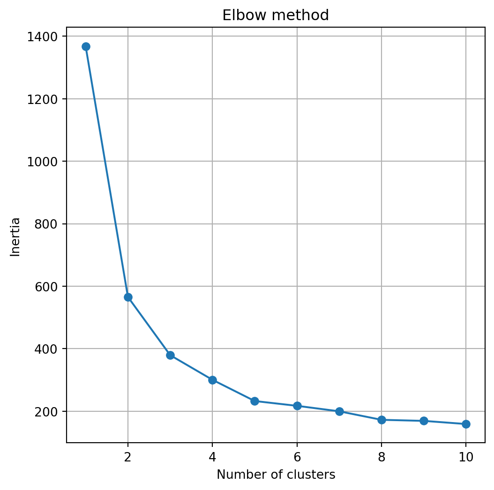
Hierarchical Clustering
Hierarchical clustering
Start with each observation standing alone in its own group.
Then, gradually merge the groups that are close together.
Continue this process until all the observations are in one large group.
Finally, step back and see which grouping works best.

Essential elements
Distance between two observations.
We use Euclidean distance.
We must standardize the predictors!
Distance between two groups.
Distance between two groups
The distance between two groups of observations is called linkage.
There are several types of linking. The most commonly used are:
- Complete linkage
- Average linkage

Complete linkage
The distance between groups is measured using the largest distance between observations.
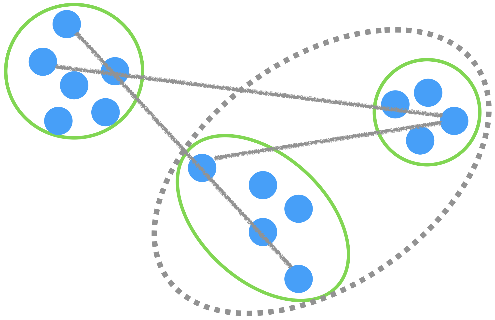
Average linkage
The distance between groups is the average of all the distances between observations.
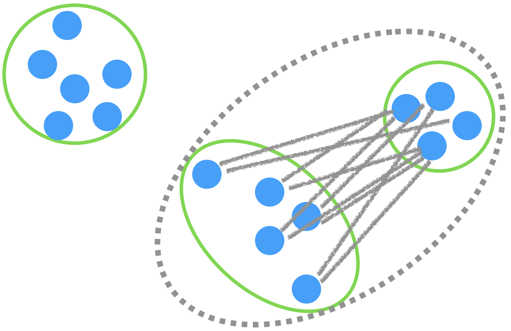
Hierarchical clustering algorithm
The steps of the algorithm are as follows:
- Assign each observation to a cluster.
- Measure the linkage between all clusters.
- Merge the two most similar clusters.
- Then, merge the next two most similar clusters.
- Continue until all clusters have been merged.
Example 2
Let’s consider a dataset called “Cereals.xlsx.” The data includes nutritional information for 77 cereals, among other data.
cereal_data = pd.read_excel("cereals.xlsx")Here, we will restrict to 7 numeric predictors.
X_cereal = cereal_data.filter(['calories', 'protein', 'fat', 'sodium', 'fiber',
'carbo', 'sugars', 'potass', 'vitamins'])
X_cereal.head()| calories | protein | fat | sodium | fiber | carbo | sugars | potass | vitamins | |
|---|---|---|---|---|---|---|---|---|---|
| 0 | 70 | 4 | 1 | 130 | 10.0 | 5.0 | 6 | 280 | 25 |
| 1 | 120 | 3 | 5 | 15 | 2.0 | 8.0 | 8 | 135 | 0 |
| 2 | 70 | 4 | 1 | 260 | 9.0 | 7.0 | 5 | 320 | 25 |
| 3 | 50 | 4 | 0 | 140 | 14.0 | 8.0 | 0 | 330 | 25 |
| 4 | 110 | 2 | 2 | 200 | 1.0 | 14.0 | 8 | -1 | 25 |
Do not forget to standardize
Since the hierarchical clustering algorithm also works with distances, we must standardize the predictors to have an accurate analysis.
scaler = StandardScaler()
Xs_cereal = scaler.fit_transform(X_cereal)Unfortunately, the Agglomerative() function in sklearn is not as user friendly compared to other available functions in Python. In particular, the scipy library has a function called linkage() for hierarchical clustering that works as follows.
Clust_Cereal = linkage(Xs_cereal, method = 'complete')The argument method sets the type of linkage to be used.
Results: Dendrogram
- A dendrogram is a tree diagram that summarizes and visualizes the clustering process.
- Observations are on the horizontal axis and at the bottom of the diagram.
- The vertical axis shows the distance between groups.
- It is read from top to bottom.
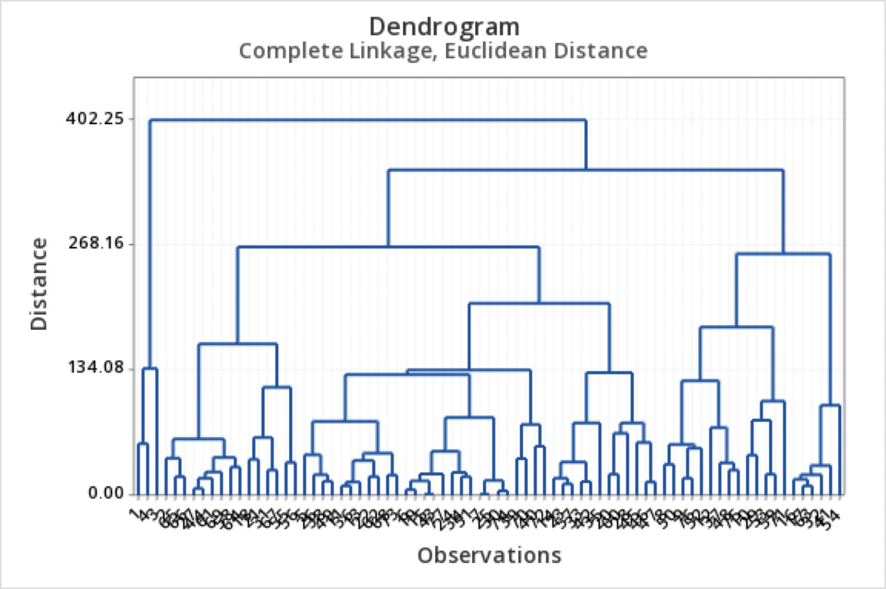
What to do with a dendrogram?
We draw a horizontal line at a specific height to define the groups.
This line defines three groups.
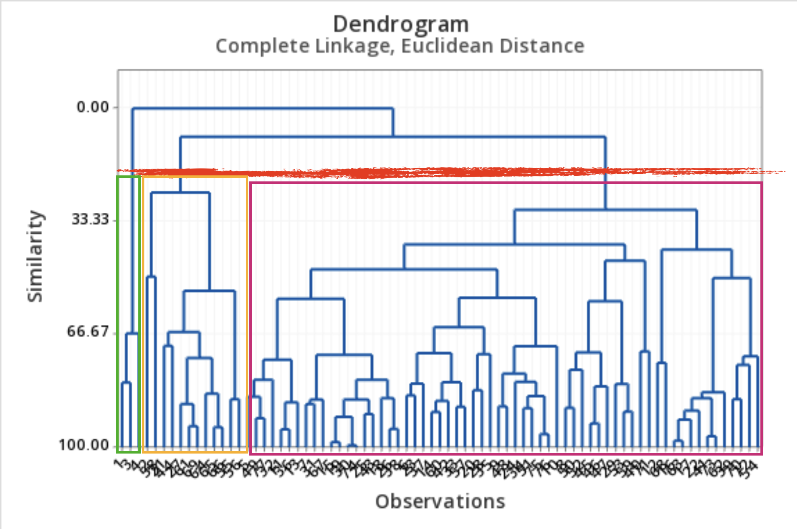
This line defines 5 groups.
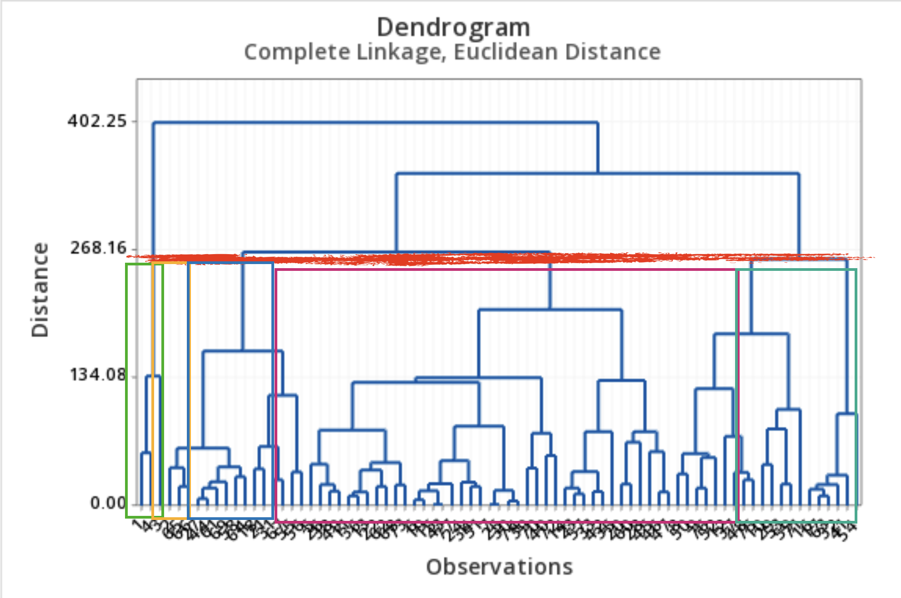
Dendrogram in Python
To produce a nice dendrogram in Python, we use the function dendrogram from scipy.
Code
plt.figure(figsize=(8, 4))
dendrogram(Clust_Cereal, color_threshold=None)
plt.title('Hierarchical Clustering Dendrogram (Complete Linkage)')
plt.xlabel('Sample Index')
plt.ylabel('Distance')
plt.tight_layout()
plt.show()
Comments
Remember to standardize the predictors!
It’s not easy to choose the correct number of clusters using the dendrogram.
The results depend on the linkage measure used.
- Complete linkage results in narrower clusters.
- Average linkage strikes a balance between narrow and thinner clusters.
Hierarchical clustering is useful for detecting outliers.
With these methods, there is no single correct answer; any solution that exposes some interesting aspect of the data should be considered.
James et al. (2017)
Comments
Selecting the number of clusters K is more of an art than a science. You’d better get K right, or you’ll be detecting patterns where none really exist.
We need to standardize all predictors.
The performance of K-means clustering is affected by the presence of outliers.
The algorithm’s solution is sensitive to the starting point. Because of this, it is typically run multiple times, and the best clustering among all runs is reported.